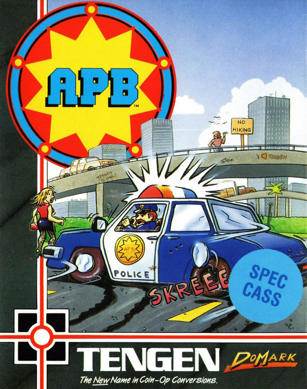
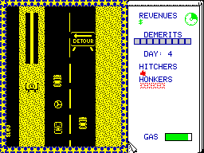

APB


{kind=link}

| Publisher: | Tengen / Domark |
| Price: | £9.99 / £14.99 |
| Year: | 1989 |
| Source: | CRASH, Issue 68 |

The Tengen arcade original of this was fantastic, so I was expecting something really naff in conversion, because usually, the more polished the arcade game, the less playable the conversion. But not so! This is the business!
The town which you police has more than its fair share of drug dealers, litter louts, damsels in distress and hookers. As Officer Bob, you have to deal with the problem! At the beginning of each day, the Police Commissioner issues you with the day’s tasks, which naturally become harder as you become more proficient. The first day simply involves training by aiming your siren at traffic cones, but as the week wears on, the quota of arrests which you have to make increases.
Instead of losing lives, you collect demerit points. Every time you crash, fall to pick up an arrest subject or make any other major mlsdemeanour, you clock one of these, up to a limit at which the game ends.

The baddies fall into two categories; the normal, run-of-the-mill baddles, like litterbugs, hitchers, dopers and honkers (that isn’t Richard after a night at the Indian, by the way). These can be arrested by blasting your siren (represented by the cross-hairs in front of your car) at them, or in the case of hitchers and poor ladies whose cars have broken down (called Helps, ’coz that’s what they shout) just by picking them up (or running ’em over!).
Alternatively, after the third level, you can try and go for the major criminals, who drive distinctive cars; you can’t ‘siren’ these; they have to be pushed off the road. Then it’s a mad dash back to the station to question your prisoner; waggle the joystick to beat up the suspect (!?), but make sure you force a confession before the commissioner gets in!
A.P.B. is an excellent conversion, it’s fast and addictive, the scrolling is very quick, and the inbetween sequences are amusing and colourful. This is arguably one of the best Spectrum arcade conversion I’ve seen. A must buy!
MIKE — 93%
’Ello, ’ello, ’ello! What’s going on here then? Well officer, it’s that brilliant arcade game All Points Bulletin on the Spectrum, and what a fantastic conversion it is too. All the thrills and spills of the arcade machine are included, along with the animation sequences and jokes that made the original such a hit. The road layout, shops, buildings and cars are all detailed but monochrome, and the cartoony sections where Officer Bob gets praised or fired are great fun. Just to add that extra obstacle there’s a railway line running right across the road with some lunatic train drivers! All the brilliant graphics, the sound track and effects will keep you coming back for more. A.P.B. is set to become a classic, you’ll kick yourself if you miss it!
NICK — 92%
RATING
| Presentation: | 90% |
| Graphics: | 90% |
| Sound: | 91% |
| Playability: | 93% |
| Addictivity: | 93% |
| Overall: | 93% |